Spectrum of the preconditioned Hessian misfit operator
The linear source inversion problem
We consider the following linear source inversion problem. Find the state and the source (parameter) that solves
Here:
-
is a finite dimensional vector that denotes noisy observations of the state in locations . Specifically, , where are i.i.d. .
-
is the linear operator that evaluates the state at the observation locations .
-
and are the parameters of the regularization penalizing the and norm of , respectively.
-
, , are given coefficients representing the diffusivity coefficient, the advective velocity and the reaction term, respectively.
-
, represents the subdomain of where we impose Dirichlet or Neumann boundary conditions, respectively.
1. Load modules
from __future__ import absolute_import, division, print_function
import dolfin as dl
import numpy as np
import matplotlib.pyplot as plt
%matplotlib inline
import sys
import os
sys.path.append( os.environ.get('HIPPYLIB_BASE_DIR', "../") )
from hippylib import *
import logging
logging.getLogger('FFC').setLevel(logging.WARNING)
logging.getLogger('UFL').setLevel(logging.WARNING)
dl.set_log_active(False)
2. The linear source inversion problem
def pde_varf(u,m,p):
return k*dl.inner(dl.nabla_grad(u), dl.nabla_grad(p))*dl.dx \
+ dl.inner(dl.nabla_grad(u), v*p)*dl.dx \
+ c*u*p*dl.dx \
- m*p*dl.dx
def u_boundary(x, on_boundary):
return on_boundary and x[1] < dl.DOLFIN_EPS
def solve(nx,ny, targets, rel_noise, gamma, delta, verbose=True):
myRandom = Random()
mesh = dl.UnitSquareMesh(nx, ny)
Vh1 = dl.FunctionSpace(mesh, 'Lagrange', 1)
Vh = [Vh1, Vh1, Vh1]
if verbose:
print( "Number of dofs: STATE={0}, PARAMETER={1}, ADJOINT={2}".format(Vh[STATE].dim(), Vh[PARAMETER].dim(), Vh[ADJOINT].dim()) )
u_bdr = dl.Constant(0.0)
u_bdr0 = dl.Constant(0.0)
bc = dl.DirichletBC(Vh[STATE], u_bdr, u_boundary)
bc0 = dl.DirichletBC(Vh[STATE], u_bdr0, u_boundary)
mtrue = dl.interpolate( dl.Expression('min(0.5,exp(-100*(pow(x[0]-0.35,2) + pow(x[1]-0.7,2))))',degree=5), Vh[PARAMETER]).vector()
m0 = dl.interpolate(dl.Constant(0.0), Vh[PARAMETER]).vector()
pde = PDEVariationalProblem(Vh, pde_varf, bc, bc0, is_fwd_linear=True)
if verbose:
print( "Number of observation points: {0}".format(targets.shape[0]) )
misfit = PointwiseStateObservation(Vh[STATE], targets)
reg = LaplacianPrior(Vh[PARAMETER], gamma, delta)
#Generate synthetic observations
utrue = pde.generate_state()
x = [utrue, mtrue, None]
pde.solveFwd(x[STATE], x, 1e-9)
misfit.B.mult(x[STATE], misfit.d)
MAX = misfit.d.norm("linf")
noise_std_dev = rel_noise * MAX
myRandom.normal_perturb(noise_std_dev, misfit.d)
misfit.noise_variance = noise_std_dev*noise_std_dev
if verbose:
plt.figure(figsize=(18,4))
nb.plot(dl.Function(Vh[PARAMETER], mtrue), mytitle = "True source", subplot_loc=131)
nb.plot(dl.Function(Vh[STATE], utrue), mytitle="True state", subplot_loc=132)
nb.plot_pts(targets, misfit.d,mytitle="Observations", subplot_loc=133)
plt.show()
model = Model(pde, reg, misfit)
u = model.generate_vector(STATE)
m = m0.copy()
p = model.generate_vector(ADJOINT)
x = [u,m,p]
mg = model.generate_vector(PARAMETER)
model.solveFwd(u, x)
model.solveAdj(p, x)
model.evalGradientParameter(x, mg)
model.setPointForHessianEvaluations(x, gauss_newton_approx=False)
H = ReducedHessian(model, 1e-12)
solver = CGSolverSteihaug()
solver.set_operator(H)
solver.set_preconditioner( reg.Rsolver )
solver.parameters["print_level"] = -1
solver.parameters["rel_tolerance"] = 1e-9
solver.solve(m, -mg)
if solver.converged:
if verbose:
print( "CG converged in ", solver.iter, " iterations." )
else:
print( "CG did not converged." )
raise
model.solveFwd(u, x, 1e-12)
total_cost, reg_cost, misfit_cost = model.cost(x)
if verbose:
plt.figure(figsize=(18,4))
nb.plot(dl.Function(Vh[PARAMETER], m), mytitle = "Reconstructed source", subplot_loc=131)
nb.plot(dl.Function(Vh[STATE], u), mytitle="Reconstructed state", subplot_loc=132)
nb.plot_pts(targets, misfit.B*u - misfit.d, mytitle="Misfit", subplot_loc=133)
plt.show()
H.misfit_only = True
k_evec = 80
p_evec = 5
if verbose:
print( "Double Pass Algorithm. Requested eigenvectors: {0}; Oversampling {1}.".format(k_evec,p_evec) )
Omega = MultiVector(x[PARAMETER], k_evec+p_evec)
myRandom.normal(1., Omega)
lmbda, V = doublePassG(H, reg.R, reg.Rsolver, Omega, k_evec)
if verbose:
plt.figure()
nb.plot_eigenvalues(lmbda, mytitle="Generalized Eigenvalues")
nb.plot_eigenvectors(Vh[PARAMETER], V, mytitle="Eigenvectors", which=[0,1,2,5,10,15])
plt.show()
return lmbda, V, Vh[PARAMETER], solver.iter
3. Solution of the source inversion problem
ndim = 2
nx = 32
ny = 32
ntargets = 300
np.random.seed(seed=1)
targets = np.random.uniform(0.1,0.9, [ntargets, ndim] )
rel_noise = 0.01
gamma = 70.
delta = 1e-1
k = dl.Constant(1.0)
v = dl.Constant((0.0, 0.0))
c = dl.Constant(0.)
lmbda, V, Vm, nit = solve(nx,ny, targets, rel_noise, gamma, delta)
Number of dofs: STATE=1089, PARAMETER=1089, ADJOINT=1089
Number of observation points: 300
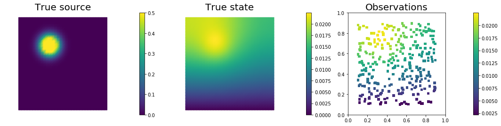
CG converged in 70 iterations.
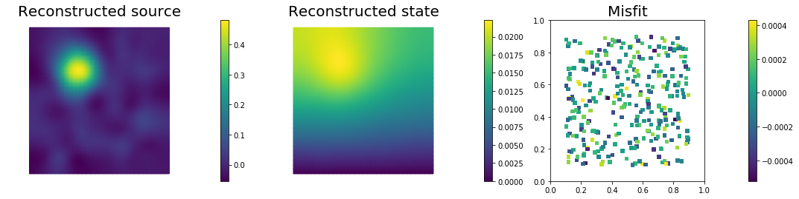
Double Pass Algorithm. Requested eigenvectors: 80; Oversampling 5.
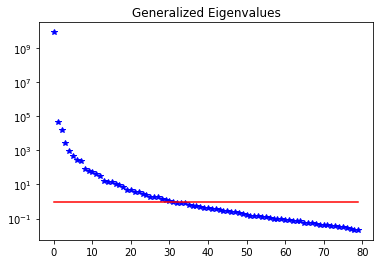
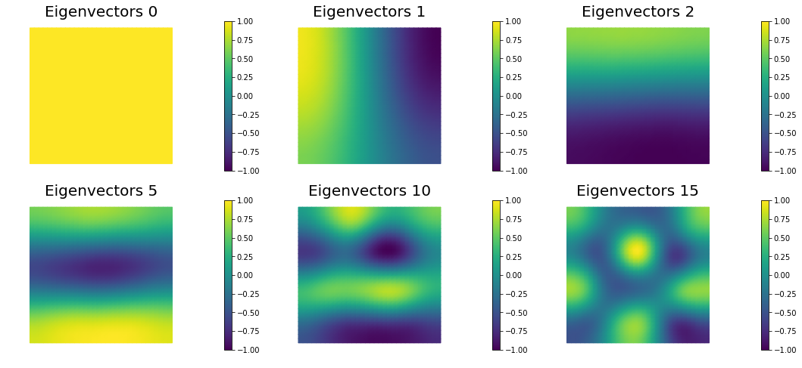
4. Mesh independence of the spectrum of the preconditioned Hessian misfit
gamma = 70.
delta = 1e-1
k = dl.Constant(1.0)
v = dl.Constant((0.0, 0.0))
c = dl.Constant(0.)
n = [16,32,64]
lmbda1, V1, Vm1, niter1 = solve(n[0],n[0], targets, rel_noise, gamma, delta,verbose=False)
lmbda2, V2, Vm2, niter2 = solve(n[1],n[1], targets, rel_noise, gamma, delta,verbose=False)
lmbda3, V3, Vm3, niter3 = solve(n[2],n[2], targets, rel_noise, gamma, delta,verbose=False)
print( "Number of Iterations: ", niter1, niter2, niter3 )
plt.figure(figsize=(18,4))
nb.plot_eigenvalues(lmbda1, mytitle="Eigenvalues Mesh {0} by {1}".format(n[0],n[0]), subplot_loc=131)
nb.plot_eigenvalues(lmbda2, mytitle="Eigenvalues Mesh {0} by {1}".format(n[1],n[1]), subplot_loc=132)
nb.plot_eigenvalues(lmbda3, mytitle="Eigenvalues Mesh {0} by {1}".format(n[2],n[2]), subplot_loc=133)
nb.plot_eigenvectors(Vm1, V1, mytitle="Mesh {0} by {1} Eigen".format(n[0],n[0]), which=[0,1,5])
nb.plot_eigenvectors(Vm2, V2, mytitle="Mesh {0} by {1} Eigen".format(n[1],n[1]), which=[0,1,5])
nb.plot_eigenvectors(Vm3, V3, mytitle="Mesh {0} by {1} Eigen".format(n[2],n[2]), which=[0,1,5])
plt.show()
Number of Iterations: 69 68 67
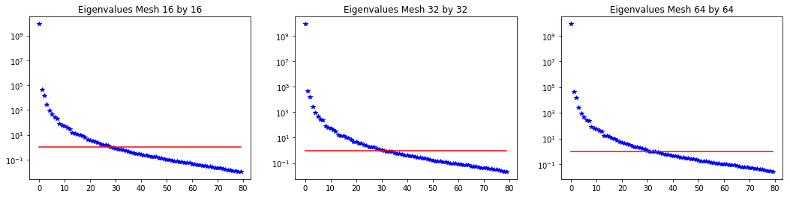
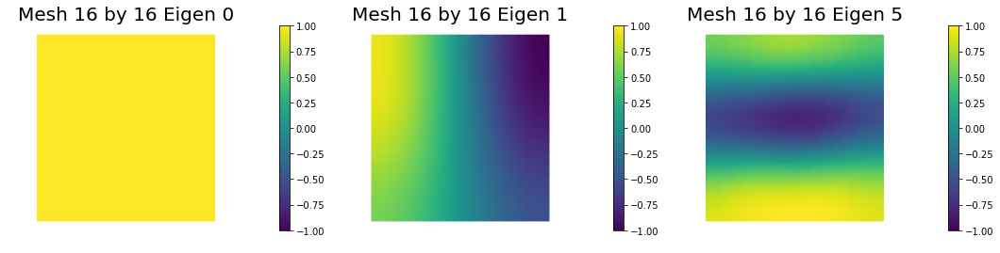
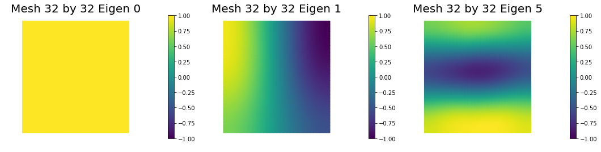
5. Dependence on the noise level
We solve the problem for different noise levels. The higher the noise level the more important becomes the effect of the regularization.
gamma = 70.
delta = 1e-1
k = dl.Constant(1.0)
v = dl.Constant((0.0, 0.0))
c = dl.Constant(0.)
rel_noise = [1e-3,1e-2,1e-1]
lmbda1, V1, Vm1, niter1 = solve(nx,ny, targets, rel_noise[0], gamma, delta,verbose=False)
lmbda2, V2, Vm2, niter2 = solve(nx,ny, targets, rel_noise[1], gamma, delta,verbose=False)
lmbda3, V3, Vm3, niter3 = solve(nx,ny, targets, rel_noise[2], gamma, delta,verbose=False)
print( "Number of Iterations: ", niter1, niter2, niter3 )
plt.figure(figsize=(18,4))
nb.plot_eigenvalues(lmbda1, mytitle="Eigenvalues rel_noise {0:g}".format(rel_noise[0]), subplot_loc=131)
nb.plot_eigenvalues(lmbda2, mytitle="Eigenvalues rel_noise {0:g}".format(rel_noise[1]), subplot_loc=132)
nb.plot_eigenvalues(lmbda3, mytitle="Eigenvalues rel_noise {0:g}".format(rel_noise[2]), subplot_loc=133)
nb.plot_eigenvectors(Vm1, V1, mytitle="rel_noise {0:g} Eigen".format(rel_noise[0]), which=[0,1,5])
nb.plot_eigenvectors(Vm2, V2, mytitle="rel_noise {0:g} Eigen".format(rel_noise[1]), which=[0,1,5])
nb.plot_eigenvectors(Vm3, V3, mytitle="rel_noise {0:g} Eigen".format(rel_noise[2]), which=[0,1,5])
plt.show()
Number of Iterations: 166 69 23
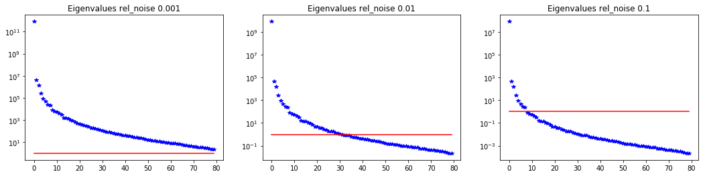
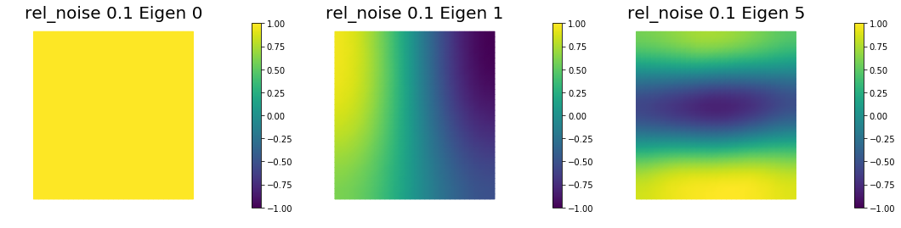
6. Dependence on the PDE coefficients
Assume a constant reaction term , and we consider different values for the diffusivity coefficient .
The smaller the value of the slower the decay in the spectrum.
rel_noise = 0.01
k = dl.Constant(1.0)
v = dl.Constant((0.0, 0.0))
c = dl.Constant(1.0)
lmbda1, V1, Vm1, niter1 = solve(nx,ny, targets, rel_noise, gamma, delta,verbose=False)
k = dl.Constant(0.1)
lmbda2, V2, Vm2, niter2 = solve(nx,ny, targets, rel_noise, gamma, delta,verbose=False)
k = dl.Constant(0.01)
lmbda3, V3, Vm3, niter3 = solve(nx,ny, targets, rel_noise, gamma, delta,verbose=False)
print( "Number of Iterations: ", niter1, niter2, niter3 )
plt.figure(figsize=(18,4))
nb.plot_eigenvalues(lmbda1, mytitle="Eigenvalues k=1.0", subplot_loc=131)
nb.plot_eigenvalues(lmbda2, mytitle="Eigenvalues k=0.1", subplot_loc=132)
nb.plot_eigenvalues(lmbda3, mytitle="Eigenvalues k=0.01", subplot_loc=133)
nb.plot_eigenvectors(Vm1, V1, mytitle="k=1. Eigen", which=[0,1,5])
nb.plot_eigenvectors(Vm2, V2, mytitle="k=0.1 Eigen", which=[0,1,5])
nb.plot_eigenvectors(Vm3, V3, mytitle="k=0.01 Eigen", which=[0,1,5])
plt.show()
Number of Iterations: 80 148 256
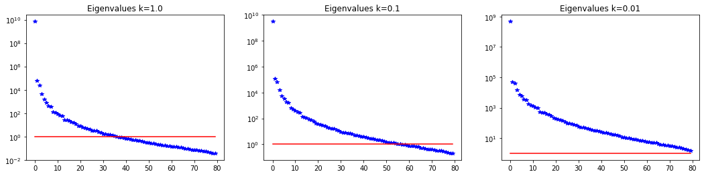
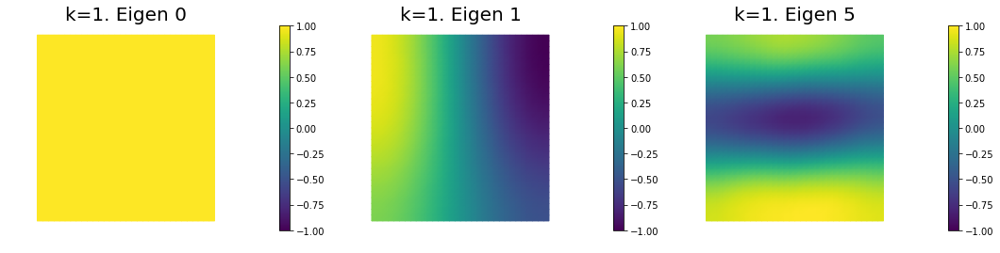
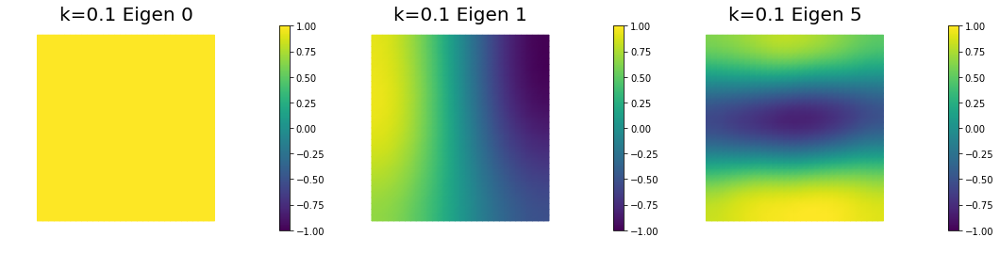
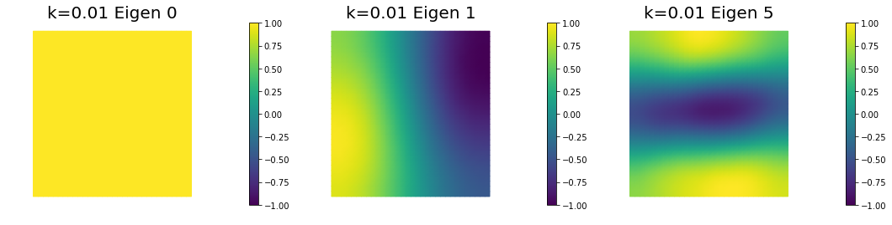
Copyright (c) 2016-2018, The University of Texas at Austin & University of California, Merced.
All Rights reserved.
See file COPYRIGHT for details.
This file is part of the hIPPYlib library. For more information and source code availability see https://hippylib.github.io.
hIPPYlib is free software; you can redistribute it and/or modify it under the terms of the GNU General Public License (as published by the Free Software Foundation) version 2.0 dated June 1991.